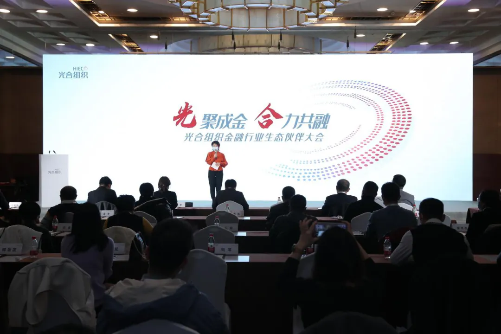

生态|万里数据库成为光合组织金融科技委员会首批成员单位
2021年1月20日，以“光聚成金 合力金融”为主题的光合组织金融行业生态伙伴大会在京召开，现场大咖云集，共话金融科技发展之道。万里数据库作为首批金融科技委员会成员，受邀参加本次会议。

万里数据库是国内新一代分布式数据库的代表性厂商，坚持以“极致稳定、极致性能、极致易用”为核心目标，已为光大银行、工商银行、深圳证券交易所等金融行业用户提供产品或服务。
其中万里数据库与光大银行、光大科技基于GreatDB源码联合研发了EverDB数据库，并在光大银行云缴费、统一支付等系统进行推广应用。光大云缴费是国内最大的开放式便民缴费平台，是光大银行倾力打造的名品业务之一。
万里数据库在金融行业的市场占有率逐年攀升，本次受邀成为光合组织金融科技委员会的成员单位，正是光合组织对万里数据库在金融领域影响力和市场拓展能力的极大认可和支持。
2020年，复杂的国际局势以及经济“双循环”模式转换的时代背景下，信息技术应用创新成为焦点。习近平总书记指出，“要加快金融行业基础设施建设，稳步推进关键信息基础设施国产化。”据权威机构预测，2023年国内金融IT市场投入将突破2000亿元。这表明，中国金融科技产业新浪潮已拉开序幕。
未来，万里数据库将借助光合组织产业生态，以自身分布式数据库的核心优势为基础，与合作伙伴通力合作、优势互补、互利共赢，以生态之力拥抱新机遇，共筑强大的生态体系，共同推进金融科技创新发展与攀升！
推荐阅读1. 老鱼笔记 | 万里数据库是一家怎样的公司？
2. 3分钟了解万里数据库的20203. 万里数据库GreatDB再度发力，荣获“金鼎奖”4. 喜报！万里开源中标光大银行开源数据库软件现场服务项目
5. 万里开源中标中移动OLTP数据库联合创新项目
万里数据库简介
万里数据库是北京万里开源软件有限公司自主研发的新一代分布式数据库，经过10余年的应用验证，在功能、性能、稳定性、易用性等方面均处于行业领先水平，历经500多个业务场景的锤炼，已广泛应用于金融、能源、通信、政府、交通等多个行业。

扫码二维码
关注公众号